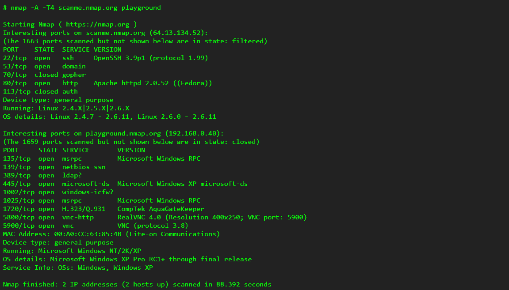

Угрозы и уязвимости ИБ ИАС
Определения «система», «автоматизированная информационная система», «система передачи данных»
Система (греч. «целое, составленное из частей, соединение») – это множество элементов, связанных друг с другом определенными отношениями, и образующих определённую целостность, единство.
Автоматизированная информационная система (АИС) – это комплекс программных, технических, информационных, лингвистических, организационно-технологических средств и персонала, предназначенный для решения задач справочно-информационного обслуживания и (или) информационного обеспечения пользователей.
Система передачи данных (СПД) – это комплексная система, обеспечивающая обмен данными между вычислительными устройствами — компьютерами, серверами, маршрутизаторами и другим оборудованием или программным обеспечением. Оборудование СПД включает в себя маршрутизаторы, межсетевые экраны, коммутаторы, контроллеры беспроводной сети, точки доступа и другие активные устройства.Что такое Модель OSI? Ее уровни
OSI (Open Systems Interconnection) — концептуальная модель взаимодействия открытых систем, которая объединяет все коммуникационные функции вычислительных или телекоммуникационных систем. OSI демонстрирует, как компьютеры или другие типы систем коммуницируют друг с другом. Поскольку каждая система имеет свои технологические особенности и работает с разными телекоммуникационными протоколами, поставить ее в один ряд с системой с теми же характеристиками может оказаться очень сложно. Именно для этого нам и нужна модель OSI — для создания универсального стандарта связи между устройствами.
OSI модель разделяет все протоколы на 7 таких уровней:
Физический (Physical)
Канальный (Datalink)
Сетевой (Network)
Транспортный (Transport)
Сеансовый (Session)
Представительный (Presentation)
Прикладной (Application)

Функции каждого уровня модели OSI

- Прикладной уровень (уровень приложений; Application layer) — верхний уровень модели, обеспечивающий взаимодействие пользовательских приложений с сетью:
● позволяет приложениям использовать сетевые службы:
○ удалённый доступ к файлам и базам данных,
○ пересылка электронной почты;
● отвечает за передачу служебной информации;
● предоставляет приложениям информацию об ошибках;
● формирует запросы к уровню представления.
6. Уровень представления (англ. Presentation layer) - Обрабатывает представление данных, обеспечивая их совместимость между различными системами.
● Преобразует запросы и данные между форматами приложений и форматами для передачи по сети.
● Обеспечивает сжатие/распаковку, шифрование/дешифрование данных.
● Перенаправляет запросы другим ресурсам, если обработка локально невозможна.
● Предоставляет промежуточный протокол для обмена информацией между различными компьютерными системами.
● Осуществляет форматирование и преобразование кода данных.
● Управляет структурами данных, используемыми программами.
● Обеспечивает перевод данных из одного формата в другой.
● Шифрует данные для защиты от несанкционированного доступа.
● Обрабатывает сжатие текстов и преобразование графических изображений в битовые потоки для передачи по сети.
5. Сеансовый уровень (англ. Session Layer) - Устанавливает, поддерживает и закрывает сеансы связи между приложениями на разных узлах.
● Управляет установлением и поддержкой соединения.
● Синхронизирует обмен данных между узлами.
● Обеспечивает восстановление сеанса при сбоях в сети.
4. Транспортный уровень (англ. Transport Layer) - Обеспечивает надежную доставку данных между конечными точками в сети (от отправителя к получателю). При этом уровень надёжности может варьироваться в широких пределах.
● Разделяет большие объемы данных на меньшие пакеты.
● Управляет потоком данных и обеспечивает контроль над надежностью передачи.
● Обеспечивает установку и разрыв соединения между узлами.
3. Сетевой уровень (англ. Network Layer) - предназначен для определения пути передачи данных. Отвечает за трансляцию логических адресов и имён(IP-адреса) в физические (Mac-адреса), определение наиболее эффективный путь для доставки пакетов данных, коммутацию и маршрутизацию, отслеживание неполадок и «заторов» в сети.
● Осуществляет маршрутизацию данных.
● Управляет сетевой адресацией.
● Обеспечивает фрагментацию и сборку пакетов данных.
2. Канальный уровень (англ. Data Link Layer) - предназначен для обеспечения взаимодействия между узлами в сети на физическом уровне и контроля ошибок, которые могут возникнуть.
● Обрабатывает физические адреса устройств (MAC-адреса).
● Управляет доступом к среде передачи данных.
● Обнаруживает и исправляет ошибки передачи данных.
1. Физический уровень (англ. Physical Layer) - отвечает за передачу данных (определяет метод) , представленных в виде физических сигналов по среде передачи данных, от одного устройства (компьютера) к другому.
● Определяет электрические, оптические и механические характеристики передачи данных.
● Кодирует и декодирует сигналы для физической передачи данных.
Различие модели OSI и стека протоколов TCP/IP

Модель OSI была разработана как общий стандарт для сетевой коммуникации и может использоваться различными протоколами.Дополнительно:
TCP/IP - это модель клиент-сервер, т.е. Когда клиент запрашивает сервис, он предоставляется сервером. Принимая во внимание, что OSI является концептуальной моделью.
TCP/IP - это стандартный протокол, используемый для каждой сети, включая Интернет, тогда как OSI - это не протокол, а эталонная модель, используемая для понимания и проектирования архитектуры системы.
TCP/IP следует вертикальному подходу. С другой стороны, модель OSI поддерживает горизонтальный подход.
TCP/IP является материальным, а OSI - нет.
TCP/IP следует принципу «сверху вниз», а модель OSI - подходу «снизу вверх».
Модель TCP/IP и модель OSI являются концептуальными моделями, используемыми для описания всех сетевых коммуникаций, в то время как TCP/IP сама по себе также является важным протоколом, используемым во всех операциях Интернета
Примеры протоколов по каждому уровню стека протоколов TCP/IP
Стек протоколов TCP/IP состоит из 4 уровней и включает в себя множество протоколов. Ниже приведены примеры протоколов каждого уровня стека протоколов TCP/IP:1. Уровень интерфейса сети (Network Interface Layer):
- Ethernet
- Wi-Fi
- Bluetooth
2. Уровень интернета (Internet Layer):
- IP (Internet Protocol)
- ICMP (Internet Control Message Protocol)
- ARP (Address Resolution Protocol)
3. Транспортный уровень (Transport Layer):
- TCP (Transmission Control Protocol)
- UDP (User Datagram Protocol)
- SCTP (Stream Control Transmission Protocol)
4. Прикладной уровень (Application Layer):
- HTTP (Hypertext Transfer Protocol) [80]
- FTP (File Transfer Protocol) [20, 21]
- SMTP (Simple Mail Transfer Protocol) [25]
- DNS (Domain Name System) [53 TCP, UDP]
Что такое АСУ ТП? Примеры кибератак
АСУ ТП (автоматизированная система управления технологическими процессами) - это комплекс программно-технических средств, который предназначен для автоматизации управления технологическими процессами в различных отраслях промышленности. АСУ ТП позволяют контролировать и управлять различными параметрами производства, такими как температура, давление, скорость и др.Примеры кибератак на АСУ ТП:
1. Кибератака на энергосистему Украины в 2015 году - в результате хакерской атаки были нарушены системы управления электропередачей в нескольких регионах Украины, что привело к отключению электроэнергии для более чем 200 тысяч человек.
2. Кибератака на станцию очистки воды в США в 2016 году - хакеры получили доступ к системе управления и изменяли параметры очистки воды, что могло привести к отравлению воды в городе.
3. Кибератака на нефтяную компанию Saudi Aramco в 2012 году - в результате атаки были уничтожены тысячи компьютеров компании, что привело к остановке работы нескольких нефтеперерабатывающих заводов.
4. Кибератака на украинскую компанию Prykarpattyaoblenergo в 2016 году - в результате атаки были нарушены системы управления электрической подстанцией, что привело к отключению электроэнергии для более чем 80 тысяч человек.
Что такое информационно-аналитические системы, их функции
про ИАС, функции
Информационно-аналитические системы (ИАС) - это комплекс программно-технических средств, предназначенных для сбора, хранения, обработки и анализа информации с целью принятия решений в различных областях деятельности.Основные функции ИАС:
1. Сбор данных - ИАС позволяют автоматизировать сбор данных из различных источников, включая базы данных, сенсоры, датчики и другие устройства.
2. Хранение данных - ИАС обеспечивают хранение данных в структурированном и организованном виде, что облегчает доступ и поиск необходимой информации.
3. Обработка данных - ИАС позволяют обрабатывать данные с использованием различных методов, включая статистический анализ, машинное обучение и искусственный интеллект.
4. Аналитика данных - ИАС обеспечивают анализ данных для выявления закономерностей, трендов и прогнозирования будущих событий.
5. Визуализация данных - ИАС позволяют визуализировать данные в удобном для восприятия виде, чтобы облегчить процесс принятия решений.
6. Интеграция данных - ИАС позволяют интегрировать данные из разных источников, чтобы получить полную картину происходящего.
7. Автоматизация процессов - ИАС позволяют автоматизировать процессы сбора, обработки и анализа данных, что повышает эффективность работы и снижает вероятность ошибок.
Признаки и компоненты ИАС
Признаки ИАС:1. Автоматизация процессов - ИАС позволяет автоматизировать процессы сбора, обработки и анализа информации, что уменьшает ручную работу и повышает точность и скорость выполнения задач.
2. Интеграция данных - ИАС позволяет интегрировать данные из различных источников, что позволяет получать полную картину происходящего.
3. Аналитика и прогнозирование - ИАС позволяет анализировать данные и прогнозировать будущие события на основе имеющихся данных.
4. Оперативность - ИАС позволяет быстро получать и обрабатывать данные, что позволяет принимать оперативные решения.
Компоненты ИАС:
1. Сбор данных - компонент, который позволяет собирать данные из различных источников.
2. Хранение данных - компонент, который позволяет хранить данные в структурированном и организованном виде.
3. Обработка данных - компонент, который позволяет обрабатывать данные и проводить анализ.
4. Аналитика и прогнозирование - компонент, который позволяет проводить аналитику и прогнозирование на основе имеющихся данных.
5. Визуализация данных - компонент, который позволяет визуализировать данные в удобном для анализа виде.
6. Интеграция с другими системами - компонент, который позволяет интегрировать ИАС с другими системами, такими как системы управления проектами или системы управления бизнес-процессами.
7. Автоматизация процессов - компонент, который позволяет автоматизировать процессы сбора, обработки и анализа данных.
Основными функциями информационно-аналитической системы являются:• извлечение данных из различных источников, их преобразование и загрузка в хранилище;
• хранение данных;
• анализ данных, в том числе оперативный и интеллектуальный;
• подготовка результатов оперативного и интеллектуального анализа для эффективного их восприятия потребителями.
Результатом применения средств ИАС являются, с одной стороны, регламентные аналитические отчеты, ориентированные на нужды пользователей различных категорий, с другой — средства интерактивного анализа информации и быстрого построения отчетов пользователями-непрограммистами с применением привычных понятий предметной области.

Что такое СОВ (системы обнаружения вторжений)? Классификация СОВ
Системы обнаружения вторжений (СОВ) - это программные или аппаратные средства, которые используются для мониторинга и обнаружения попыток несанкционированного доступа к компьютерным системам или сетям. СОВ могут использоваться для обнаружения различных типов атак, таких как вирусы, черви, троянские программы, мальварные атаки и другие.Классификация СОВ может быть различной в зависимости от критериев. Ниже приведены несколько примеров классификации СОВ:
1. По методу обнаружения:
- СОВ на основе сигнатур - такие СОВ обнаруживают вторжения на основе заранее заданных сигнатур или шаблонов, которые соответствуют известным атакам.
- СОВ на основе аномалий - такие СОВ обнаруживают вторжения на основе аномального поведения или необычных действий, которые не соответствуют нормальному поведению системы.
- Гибридные СОВ - такие СОВ комбинируют методы обнаружения на основе сигнатур и аномалий.
2. По уровню компьютерной системы или сети:
- Сетевые СОВ - такие СОВ мониторят сетевой трафик и обнаруживают атаки на уровне сетевых протоколов.
- Хост-ориентированные СОВ - такие СОВ мониторят активность на отдельных компьютерах или серверах.
- Приложенные СОВ - такие СОВ мониторят активность внутри приложений и обнаруживают атаки на уровне приложений.
3. По типу использования:
- Реактивные СОВ - такие СОВ реагируют на обнаруженные атаки и пытаются предотвратить их или минимизировать ущерб.
- Проактивные СОВ - такие СОВ предназначены для предотвращения атак, а не для реакции на них.
Типовая архитектура системы обнаружения вторжений. Примеры СОВ
Типовая архитектура системы обнаружения вторжений (СОВ) может включать следующие компоненты:1. Сенсоры - компоненты, которые мониторят сетевой трафик или активность на отдельных устройствах и обнаруживают потенциальные угрозы.
2. Сервер управления - компонент, который управляет работой сенсоров, принимает и анализирует данные, генерирует предупреждения и уведомления.
3. Хранилище данных - компонент, который хранит данные о событиях, обнаруженных сенсорами, и обеспечивает доступ к этим данным для анализа и поиска угроз.
4. Компонент анализа - компонент, который анализирует данные, полученные от сенсоров, и ищет признаки угроз и аномального поведения.
5. Компонент предупреждения - компонент, который генерирует предупреждения и уведомления о потенциальных угрозах и отправляет их администраторам системы безопасности.
Примеры систем обнаружения вторжений включают:
1. Snort - бесплатная СОВ с открытым исходным кодом, которая использует методы обнаружения на основе сигнатур.
2. Suricata - бесплатная система обнаружения вторжений с открытым исходным кодом, которая использует методы обнаружения на основе сигнатур и аномалий.
3. OSSEC - бесплатная и открытая СОВ на основе аномалий, которая используется для обнаружения атак на уровне хоста.
4. McAfee Network Security Manager - коммерческая СОВ на основе сигнатур и аномалий, которая используется для обнаружения атак на сетевой уровень.
5. IBM QRadar - коммерческая СОВ на основе аномалий, которая используется для обнаружения атак на уровне приложений и сети.
6. Splunk Enterprise Security - коммерческая СОВ на основе аномалий, которая используется для обнаружения атак на различных уровнях системы.
Что такое DDP-системы (системы распределенной инфраструктуры ложных целей)? Примеры программных решений
DDP (Decoy Deployment Platform) - это система распределенной инфраструктуры ложных целей, которая используется для обмана злоумышленников и обнаружения кибератак. Система создает ложные объекты и среды, которые имитируют настоящие, но на самом деле являются ловушками для злоумышленников.Примеры программных решений для создания DDP-систем:
1. Illusive Networks - платформа, которая создает ложные цели внутри информационной системы и использует аналитику на основе искусственного интеллекта для обнаружения кибератак.
2. Fidelis Cybersecurity - платформа, которая создает виртуальные объекты и контент, которые имитируют реальные данные и приложения, и использует их для отслеживания и обнаружения кибератак.
- Cymmetria - платформа, которая создает ложные цели и использует аналитику на основе машинного обучения для обнаружения кибератак.
Что такое модель Cyber Kill Chain?
Модель Cyber Kill Chain - это модель, которая описывает жизненный цикл кибератаки и состоит из семи этапов, которые злоумышленники обычно проходят в процессе проведения кибератаки:Этап 1. Внешняя разведка (Reconnaisance)
Этот этап может быть определен как фаза выбора цели, выявления особенностей организации, специфических требований в данной отрасли, выбор технологий, изучения активности компании в соцсетях или через рассылки.
По сути дела, хакер пытается получить ответы на такие вопросы: «Какие методы атаки будут работать с наибольшей степенью успеха?» или, например, «Какие из них будет легче всего осуществить с точки зрения инвестиций и ресурсов?»
Этап 2. Вооружение и упаковка (Weaponization)
Возможны различные формы: эксплуатация веб-приложения, стандартные или специально изготовленные вредоносные программы, уязвимости в различных документах (PDF, Office или другие форматы документов) или атаки типа watering hole. Обычно они подготавливаются с очень конкретными знаниями о цели.
Этап 3. Доставка (Delivery)
Передача требуемого (вредоносного) контента либо по инициативе жертвы (например, пользователь заходит на вредоносный сайт, в результате чего передается вредоносная программ, или он открывает вредоносный PDF-файл), либо по инициативе хакера (SQL-инъекция или компрометация сетевой службы).
Этап 4. Заражение (Exploitation)
После доставки на компьютер или устройство пользователя, требуемый (вредоносный) контент разворачивается, устанавливаясь в окружении. Как правило, это происходит при использовании известной уязвимости, для которой ранее был доступен патч. В большинстве случаев (в зависимости от цели) хакерам не требуется нести дополнительные расходы на поиск и эксплуатацию неизвестных уязвимостей.
Этап 5. Установка (Installation)
Часто установка (внедрение) происходит на фоне каких-то внешних соединений. Обычно вредоносная программа скрывается в этих операциях, незаметно проникая на конечные точки, к которым можно получить доступ. Затем хакер может контролировать это приложение без ведома жертвы.
Этап 6. Получение управления (Command & Control)
На этом этапе хакеры начинают контролировать активы жертвы с помощью таких методов управления (как правило, удаленных), как DNS, Internet Control Message Protocol (ICMP), веб-сайты и социальные сети.
В результате, хакер передает на контролируемые «активы» требуемые команды: что делать далее и какую информацию собирать. Используемые для сбора данных методы: снимки экрана, контроль нажатия клавиш, взлом паролей, мониторинг сети на учетные данные, сбор критического контента и документов. Часто назначается промежуточный хост, куда копируются все данные, а затем они сжимаются/шифруются для дальнейшей отправки.
Этап 7. Выполнение действий у жертвы (Actions on objects)
На финальном этапе хакер отправляет собранные данные и/или выводит из строя ИТ-активы во время своего нахождения в сети жертвы. Затем проводятся мероприятия по выявлению других целей, расширению своего присутствия внутри организации и (что самое важное) извлечению данных.
Затем цепочка повторяется. Вообще, особенностью Cyber-Kill Chain является то, что она круговая, а не линейная. Как только хакер проник в сеть, он снова начинает эту цепочку внутри сети, осуществляя дополнительную разведку и выполняя горизонтальное продвижение внутри Вашей сети.
Кроме того, надо иметь в виду, что хотя методология одинакова, но при нахождении внутри сети хакеры будут использовать другие методы для этапов внутренней цепочки, чем в случае, когда они находятся вне сети. Фактически, после проникновения хакера в сеть, он становится инсайдером (пользователем с определенными правами и присутствием в сети), а это мешает специалистам компании по безопасности подозревать атаку и понимать, что уже идут поздние стадии расширенной модели Cyber-Kill Chain.
Что такое APT-атака? Примеры целевых атак
APT (Advanced Persistent Threat) - это вид целевой кибератаки, направленной на длительное проникновение в систему или сеть с целью получения конфиденциальной информации или нанесения ущерба. APT-атаки характеризуются высокой степенью специализации и координации, а также использованием сложных технологий и методов, чтобы остаться незамеченными и продолжать свою деятельность в течение длительного времени.APT-атаки могут быть направлены на организации различных сфер деятельности, включая правительственные учреждения, финансовые организации, крупные корпорации и другие. Некоторые примеры целевых APT-атак включают:
1. APT28 (Fancy Bear) - группа хакеров, связанная с российскими спецслужбами, которая использовала целевые атаки для получения конфиденциальной информации у правительственных учреждений и крупных корпораций.
2. APT10 (Red Apollo) - группа хакеров, связанная с китайскими спецслужбами, которая использовала целевые атаки для получения конфиденциальной информации у крупных корпораций и правительственных учреждений.
3. APT41 - группа хакеров, которая занималась кибершпионажем и киберпреступлениями в интересах китайского правительства, а также заражением игровых компьютеров для получения финансовой выгоды.
4. APT32 (OceanLotus) - группа хакеров, связанная с правительством Вьетнама, которая использовала целевые атаки для получения конфиденциальной информации у правительственных учреждений, журналистов и активистов.
Примеры систем защиты от целенаправленных атак
1. Системы мониторинга и анализа событий (SIEM). Эти системы собирают и анализируют данные о событиях в системе, чтобы выявлять аномалии и потенциальные угрозы. Они могут также принимать меры по автоматическому блокированию атакующих или предупреждать администраторов о возможных угрозах.2. Идентификация и аутентификация пользователей. Это включает в себя различные методы проверки личности пользователей (например, проверку пароля, двухфакторную аутентификацию и др.), чтобы предотвратить несанкционированный доступ к системе.
3. Контроль доступа к данным и ресурсам. Это включает в себя ограничение доступа к чувствительным данным только для авторизованных пользователей, а также регулярное аудитирование доступа к ресурсам, чтобы обнаруживать потенциальные угрозы.
4. Мониторинг и защита сетевого трафика. Это включает в себя различные методы защиты от атак в сети, такие как обнаружение вредоносных программ и защита от искажения данных.
5. Антивирусная защита. Это позволяет обнаруживать и удалять вредоносное ПО на компьютерах и серверах в системе.
6. Защита от отказа в обслуживании (DDoS). Это включает в себя защиту от атак DDoS, которые могут перегрузить компьютеры и серверы в системе, приведя к недоступности сервисов.
7. Мониторинг и защита от внутренних угроз. Это включает в себя мониторинг действий пользователей в системе и принятие мер по предотвращению угроз со стороны злоумышленников или внутренних сотрудников.
Что такое NGFW?
NGFW (Next-Generation Firewall) - это новое поколение брандмауэров, которые обеспечивают расширенные функции защиты для современных сетей. NGFW объединяет традиционные функции брандмауэра (например, контроль доступа и NAT) с расширенными возможностями защиты, такими как IPS (система предотвращения вторжений), веб-фильтрация, защита от вредоносных программ и другие функции.NGFW используют различные технологии, такие как анализ поведения трафика, контроль приложений и интеграцию с системами управления угрозами, чтобы обеспечить более точное обнаружение и блокирование вредоносных атак. Они также могут интегрироваться с другими системами безопасности, такими как системы управления идентификацией и доступом (IAM) и системы управления событиями и инцидентами (SIEM), для обеспечения целостной защиты сети.
Основная цель NGFW - это обеспечение более высокого уровня безопасности для организаций, защита от различных угроз и улучшение управляемости и видимости сетевого трафика. NGFW являются важной частью современных систем безопасности и используются для защиты критически важных ресурсов, таких как корпоративные сети, облачные сервисы и приложения.
Организационная работа в сфере ИБ организации
Организационная работа в области информационной безопасности (ИБ) является одной из ключевых задач для любой организации, использующей компьютерные технологии в своей деятельности. Она должна начинаться с анализа рисков и определения угроз, связанных с активами, информацией и персоналом организации.Далее необходимо разработать концепцию безопасности, которая будет определять основные требования и правила, необходимые для обеспечения безопасности информации в организации. В концепции должны быть определены ответственные лица и подразделения, которые будут заниматься реализацией мер по обеспечению безопасности информации.
Для реализации одной из основных мер безопасности, а именно контроля доступа к информации, необходимо разработать специальные политики и процедуры, регулирующие доступ к информации в соответствии с требованиями информационной безопасности.
Одним из важных направлений работы является обучение персонала организации правилам и процедурам в области информационной безопасности. Обучение должно проводиться периодически и включать в себя как обязательные правила, так и рекомендации по безопасному использованию информационных технологий.
Помимо этого, очень важно регулярно проводить аудиты информационной безопасности для выявления уязвимостей и ошибок в системах безопасности организации. Результаты аудита позволяют корректировать политики и процедуры безопасности, а также определять дополнительные узкие места в системе защиты.
Законы, регулирующие порядок работы с конфиденциальной информацией
Принципы информационной безопасности
Принципы информационной безопасности - это основные рекомендации и правила, которые необходимо соблюдать для обеспечения безопасности информации в организации. Они включают в себя следующие:1. Конфиденциальность - защита информации от несанкционированного доступа, использования и раскрытия.
2. Целостность - защита информации от несанкционированных изменений.
3. Доступность - обеспечение доступности информации для авторизованных пользователей в любое время.
4. Аутентификация - проверка подлинности пользователей и устройств для обеспечения безопасного доступа к информации.
5. Авторизация - управление правами доступа пользователей к информации в соответствии с их должностными обязанностями и требованиями безопасности.
6. Надежность - обеспечение надежной работы системы и защиты информации от угроз.
7. Неотказуемость - обеспечение возможности доказать факт совершения действий в системе.
8. Согласованность - обеспечение соответствия требованиям безопасности и законодательства.
9. Управляемость - управление рисками и угрозами информационной безопасности в организации.
10. Обучение и осведомленность - обучение пользователей правилам безопасности и поддержание их осведомленности о текущих угрозах.
Банковские угрозы ИБ
Угрозы информационной безопасности для банковской сферы могут быть различными и могут включать в себя следующие:1. Фишинг и фишинговые атаки - злоумышленники могут отправлять электронные письма, которые могут выглядеть, как будто они отправлены от банка или другого надежного источника, с целью получения личных данных клиентов банка, таких как пароли, номера кредитных карт и другие конфиденциальные данные.
2. Вредоносное программное обеспечение - злоумышленники могут использовать различные виды вредоносного ПО, такие как вирусы, черви, троянские программы и шпионское ПО, чтобы получить доступ к конфиденциальной информации клиентов банка.
3. Банковские троянские программы - это специально разработанные программы, которые могут вмешиваться в банковские операции, перехватывать данные, вводимые пользователем, и отправлять их злоумышленнику.
4. Кража и мошенничество - злоумышленники могут использовать различные методы, такие как взлом сайта банка, фишинговые атаки и другие, чтобы получить доступ к личным данным клиентов и использовать их в качестве идентификационных данных для кредитных мошенничеств и других преступлений.
5. DDoS-атаки - злоумышленники могут использовать DDoS-атаки, чтобы перегрузить серверы банка и вызвать сбои в системах банка, что может привести к временной недоступности сайта и другим проблемам.
6. Социальная инженерия - злоумышленники могут использовать социальную инженерию, чтобы обмануть клиентов банка и получить доступ к их личным данным.
Для защиты от этих угроз банки могут использовать различные технологии и методы, такие как многофакторная аутентификация, шифрование данных, системы мониторинга и обнаружения вторжений, а также обучение пользователей правилам безопасности и методам защиты информации. Банки также могут сотрудничать с правительственными организациями, чтобы разработать более эффективные методы борьбы с киберпреступностью и улучшать безопасность в целом.
Что такое НСД? Методы доступа и основные угрозы для информации
НСД - это сокращение от “несанкционированный доступ к информации”. Это явление, когда неавторизованные лица получают доступ к конфиденциальной информации, которая должна быть защищена. Несанкционированный доступ может иметь серьезные последствия для организации, такие как утечки данных, нарушения законодательства об информационной безопасности и юридические последствия.Методы доступа к информации могут варьироваться в зависимости от уровня защиты, который установлен в организации. Некоторые из наиболее распространенных методов доступа к информации включают:
- Фишинговые атаки, когда злоумышленники пытаются получить доступ к информации, путем маскировки под легитимные источники и обмана пользователей.
- Атаки на пароли, когда злоумышленники пытаются угадать или взломать пароли для получения доступа к информации.
- Внутренние угрозы, когда сотрудники организации, имеющие легальный доступ к информации, могут использовать этот доступ для злоупотреблений или утечек данных.
Основные угрозы для информации, связанные с НСД, включают:
- Утечки данных - это наиболее распространенная угроза, связанная с несанкционированным доступом к информации. Это может привести к утечке личных данных клиентов, банковских данных и другой конфиденциальной информации.
- Нарушение законодательства - несанкционированный доступ к информации может привести к нарушению законодательства об информационной безопасности, что может привести к штрафам и другим негативным последствиям для организации.
- Ущерб репутации - утечка конфиденциальной информации может повредить репутации организации и уменьшить доверие клиентов и партнеров.
- Юридические последствия - организации могут столкнуться с юридическими последствиями, если несанкционированный доступ к информации приведет к нарушению законодательства или ущербу для третьих лиц.
Для защиты от НСД организации могут использовать различные методы, такие как шифрование данных, управление доступом, многофакторная аутентификация и другие методы защиты информации. Также важно обучать сотрудников организации правилам безопасности и установленным процедурам для предотвращения НСД.
Каким образом можно организовать перехват паролей?
МЕТОДЫ ПЕРЕХВАТА ПАРОЛЕЙБрутфорс(от английского bruteforce — полный перебор или метод «грубой силы») – один из популярных методов взлома паролей на серверах и в различных программах. Заключается он в том, что программа-взломщик пытается получить доступ к какой-либо программе (например, к почтовому ящику) путем перебора паролей по критериям, заданным владельцем данной программы: по словарю, по длине, по сочетаниям цифр, да в принципе таких критериев существует множество.
Фишинг (англ. phishing, от fishing — рыбная ловля, выуживание) — вид интернет-мошенничества, целью которого является получение доступа к конфиденциальным данным пользователей — логинам и паролям. Это достигается путём проведения массовых рассылок электронных писем от имени популярных брендов, а также личных сообщений внутри различных сервисов, например, от имени банков или внутри социальных сетей. В письме часто содержится прямая ссылка на сайт, внешне неотличимый от настоящего, либо на сайт с редиректом. После того, как пользователь попадает на поддельную страницу, мошенники пытаются различными психологическими приёмами побудить пользователя ввести на поддельной странице свои логин и пароль, которые он использует для доступа к определённому сайту, что позволяет мошенникам получить доступ к аккаунтам и банковским счетам.
Социальная инженерия придерживается той же концепции, что и фишинг - “спросить у пользователя пароль”, но не с помощью почтового ящика, а в реальном мире.
Любимый трюк социальной инженерии – позвонить в офис под видом сотрудника ИТ-безопасности и просто попросить пароль доступа к сети. Вы будете удивлены, как часто это работает. Некоторые преступники даже испытывают потребность - надеть костюм и бейдж прежде, чем придти в компанию, чтобы задать администратору в приемной тот же вопрос лицом к лицу.
Сниффер(нюхач, eng) - это программа, которая устанавливается под NIC (Сетевую Интерфейсную Карту), иначе называемую Ethernet карта(одна из необходимых частей аппаратных средств, для физического соединения компьютеров в локальной сети). Как известно информация по сети передается пакетами - от вашей машины к удаленной, так вот сниффер, установленный на промежуточном компьютере, через который будут проходить пакеты - способен захватывать их, пока они еще не достигли цели.
Клавиатурные шпионы образуют большую категорию вредоносных программ, представляющую большую угрозу для безопасности пользователя.
Клавиатурные шпионы - это программа для скрытной записи информации о нажимаемых пользователем клавишах.
Как правило, современные клавиатурные шпионы не просто записывает коды вводимых клавиш - он “привязывает” клавиатурный ввод к текущему окну и элементу ввода. Кроме того, многие клавиатурные шпионы отслеживают список запущенных приложений, умеют делать “снимки” экрана по заданному расписанию или событию, шпионить за содержимым буфера обмена и решать ряд задач, нацеленных на скрытное слежение за пользователем. Записываемая информация сохраняется на диске и большинство современных клавиатурных шпионов могут формировать различные отчеты, могут передавать их по электронной почте или http/ftp протоколу. Кроме того, ряд современных клавиатурных шпионов пользуются RootKit технологиями для маскировки следов своего присутствия в системе.
Суть угрозы информации «Маскарад»
МАСКАРАД
Под атакой типа “маскарад” понимается способ нападения на информационную систему (ИС), при котором злоумышленник имитирует все штатные информационные и служебные процедуры ИС, создавая у реальных пользователей и административных служб иллюзию корректного функционирования сети.
Простейшим примером такой атаки может служить подделка MAC- или IP-адресов. Подделав адрес отправителя в заголовке IP-пакета, злоумышленник тем самым уже осуществляет атаку типа “маскарад”, выдавая себя за того, кто пользуется доверием у атакуемой стороны. Это дает возможность перехватить и прослушать сетевой трафик.
При всем разнообразии атак типа “маскарад” этот способ нападения может иметь три варианта реализации, которые отличаются друг от друга составом участников разыгрываемого нарушителем “спектакля”:
- нарушитель, скрываясь под маской легального пользователя (административной системы), начинает и заканчивает “игру” только с одним клиентом сети (в данном случае под клиентом сети понимается либо пользователь, либо административная система, либо прикладной или системный процесс), т. е. “маскарад один на один”;
- нарушитель, скрываясь под маской то одного, то другого клиента сети, начинает и заканчивает “игру” с двумя клиентами одновременно, создавая у обоих иллюзию корректного информационного взаимодействия (“маскарад с двумя”);
- смешанный вариант (или “комбинированный маскарад”), при котором нарушитель начинает “диалог” с одним клиентом, а в дальнейшем к “диалогу” присоединяется другой клиент, под маской которого выступал нарушитель (комбинация “1+1”), либо наоборот, когда начинался “диалог” с двумя клиентами, завершался только с одним (комбинация “2-1”).
- нарушитель, скрываясь под маской легального пользователя (административной системы), начинает и заканчивает “игру” только с одним клиентом сети (в данном случае под клиентом сети понимается либо пользователь, либо административная система, либо прикладной или системный процесс), т. е. “маскарад один на один”;
Что такое «незаконное использование привилегий»?
Незаконное использование привилегий (англ. misuse of privileges) означает злоупотребление правами, полномочиями или доступом, предоставленными кому-то по должности, должностному положению или иным обстоятельствам. Например, сотрудник компании может использовать свой доступ к конфиденциальной информации для получения личной выгоды или для передачи информации третьим лицам без разрешения. Это является незаконным и может привести к уголовной, административной или дисциплинарной ответственности.Разновидности основных угроз ИБ в локальных размерах
1. Вирусы и вредоносные программы: это программы, которые могут заражать компьютеры, перехватывать конфиденциальные данные пользователя.2. Кибератаки: это атаки на серверы, системы и приложения, которые могут привести к утечке данных, повреждению систем и нарушению бизнес-процессов.
3. Фишинг: это вид мошенничества, при котором атакующие пытаются получить конфиденциальную информацию, такую как пароли и логины пользователей.
4. Кража личных данных: это кража информации, которая может быть использована для того, чтобы получить доступ к чужому счету в банке.
5. Нарушение безопасности в предприятии: это утечка информации, возможная благодаря недостаточной защите критически важных данных.
6. Социальная инженерия: это метод атаки, когда атакующие получают доступ к конфиденциальной информации, используя обман и манипуляции.
7. Неправомерный доступ и утечка данных: это нарушение, когда неавторизованные пользователи получают доступ к информации, которая должна быть конфиденциальной.
8. Кража устройств: это украсть устройство, на котором есть конфиденциальная информация.
9. Нарушение авторских прав: это нарушение закона, когда пользователи незаконно распространяют данные, которые защищены авторскими правами.
10. Нарушение закона: это нарушение законов, которые регулируют использование ИТ-ресурсов и сервисов.
Степени и проявления ущерба для организации
Ущерб для организации может выражаться в различных формах и проявляться в разных степенях.Среди основных проявлений ущерба для организации можно выделить:
1. Финансовые потери – непосредственный ущерб для организации, который может быть вызван различными причинами: недостаточное количество заказов, низкая прибыль, убыточность проектов, выплаты штрафов и компенсаций, необходимость проведения ремонтов и обслуживания оборудования и прочее.
2. Репутационный ущерб – имидж организации может быть пострадал в результате негативных публикаций, скандалов, конфликтов с заказчиками или поставщиками, сложной ситуации на рынке и т.д.
3. Убытки от потери клиентов – ущерб может быть вызван потерей доверия клиентов из-за плохого качества продукции или услуг, неправильного подхода к обслуживанию клиентов, неэффективной рекламной стратегии и т.д.
4. Негативный влияние на работу коллектива – убытки, вызванные низкой эффективностью коллектива, неудачными проектами, конфликтами внутри организации и т.п.
5. Возможность потери ключевых работников – ущерб может быть вызван уходом из организации опытных и квалифицированных сотрудников из-за различных причин: низкой заработной платы, отсутствия перспектив развития, некомфортных условий работы и т.п.
Примеры актуальных внешних угроз при кибератаках на организации
1. Фишинг: атаки на электронную почту и социальные сети, осуществляемые мошенниками для получения личной информации и финансовых средств.2. Малваре: вредоносные программы, которые могут захватить управление над компьютерами и сетями организаций и использовать их для кражи данных или атак на другие системы.
3. Денежные мошенничества: киберпреступники могут использовать разные методы, включая фишинг, для получения доступа к банковским счетам или другим финансовым средствам.
4. Атаки на доступ: хакеры могут попытаться получить доступ к защищенным сетям организаций, используя уязвимости в системах аутентификации и авторизации.
5. Спам: массовая отправка нежелательных сообщений может приводить к отказу в обслуживании и другим проблемам для компаний.
6. Дистрибуция вирусов: киберпреступники могут использовать вирусы и другие вредоносные программы для заражения веб-сайтов и других ресурсов, что может приводить к серьезным последствиям для организаций.
7. Социальные атаки: киберпреступники могут использовать социальные сети и другие методы общения для получения информации о своих жертвах и использования этой информации для кибератак.
Что такое «аудит ИБ в организации»?
Аудит информационной безопасности (ИБ) в организации - это процесс оценки системы ИБ организации, с целью выявления уязвимостей, рисков и недостатков в системе ИБ, а также рекомендаций по улучшению. Аудит ИБ может проводиться внутренними или внешними специалистами по ИБ, которые имеют опыт и знания в области оценки системы ИБ.Этапы аудита ИБ:
1. Планирование - на этом этапе определяются цели аудита ИБ, определяется методология и выбирается команда аудиторов. Также определяются ресурсы, необходимые для проведения аудита, и составляется план работ.
2. Сбор информации - на этом этапе проводится анализ документации и сбор информации о системе ИБ в организации. Этот этап может включать в себя ознакомление с политиками безопасности, процедурами, руководствами и другими документами, связанными с ИБ.
3. Оценка рисков - на этом этапе проводится оценка уровня рисков в системе ИБ в организации. Это включает в себя оценку уязвимостей, возможных угроз и вероятности возникновения инцидентов.
4. Проверка соответствия - на этом этапе аудиторы проверяют соответствие системы ИБ в организации требованиям законодательства, стандартам и рекомендациям.
5. Тестирование - на этом этапе проводится тестирование системы ИБ в организации для выявления уязвимостей и возможных угроз. Это может включать в себя тестирование на проникновение, сканирование портов, анализ логов и другие методы.
6. Анализ результатов - на этом этапе аудиторы анализируют полученные результаты, выявляют уязвимости и риски, и оценивают общий уровень защиты информации в организации.
7. Подготовка отчета - на этом этапе составляется отчет об аудите ИБ, который содержит описание выявленных проблем и рекомендации по улучшению системы ИБ в организации.
8. Проведение мероприятий по улучшению - на этом последнем этапе рекомендации, полученные в отчете, применяются в практике, проводятся мероприятия по улучшению системы ИБ в организации.
Что такое «программное обеспечение»? Классификация
Программное обеспечение (ПО) - это совокупность программ и данных, которые обеспечивают работу компьютера или другого устройства. ПО может быть представлено в виде операционной системы, приложений, драйверов устройств, библиотек и других компонентов, которые обеспечивают работу устройства.Программное обеспечение (ПО) можно классифицировать по различным критериям. Ниже приведены несколько примеров классификации ПО:
1. По типу задач, которые выполняет ПО:
- Системное ПО (например, операционные системы, драйверы устройств, виртуальные машины);
- Прикладное ПО (например, офисные приложения, браузеры, мультимедийные приложения);
- Компоненты и библиотеки (например, библиотеки для работы с графикой, сетевыми протоколами или базами данных);
- Инфраструктурное ПО (например, веб-сервера, базы данных, системы управления контентом).
2. По способу распространения:
- Проприетарное ПО (например, Microsoft Office, Adobe Photoshop, Windows);
- Свободное и открытое ПО (например, Linux, Apache, WordPress);
- Облачное ПО (например, Google Docs, Dropbox, Salesforce);
- Мобильное ПО (например, приложения для Android и iOS).
3. По типу лицензирования:
- Проприетарное ПО с закрытым исходным кодом;
- Проприетарное ПО с открытым исходным кодом;
- Свободное ПО с открытым исходным кодом (например, GNU/Linux);
- Свободное ПО с закрытым исходным кодом (например, MySQL Community Edition).
4. По стадии жизненного цикла:
- Новое ПО (например, бета-версии или первые релизы);
- Устаревшее ПО (например, устаревшие версии или продукты, которые перестали поддерживаться разработчиками);
- Легаси ПО (например, устаревшие системы или приложения, которые до сих пор используются и не могут быть заменены на новые).
Жизненный цикл ПО
Жизненный цикл программного обеспечения (ПО) - это процесс разработки, тестирования, внедрения и поддержки программного обеспечения. Жизненный цикл ПО включает в себя несколько этапов, которые могут варьироваться в зависимости от методологии разработки ПО и конкретного проекта. Однако, общепринятой моделью жизненного цикла ПО является следующая последовательность этапов:1. Планирование - на этом этапе определяются требования к ПО, определяются цели и задачи проекта, выбирается методология разработки и составляется план работ.
2. Анализ - на этом этапе проводится анализ требований и сбор информации о проекте, формулируются функциональные и нефункциональные требования к ПО, составляется спецификация требований.
3. Проектирование - на этом этапе происходит разработка архитектуры ПО, проектирование интерфейсов пользователя, выбор технологий и инструментов, которые будут использоваться при разработке.
4. Разработка - на этом этапе происходит создание кода ПО, написание тестов, интеграция компонентов, отладка и тестирование ПО.
5. Тестирование - на этом этапе проводятся тесты ПО для проверки его работоспособности и соответствия требованиям. Этот этап может включать в себя несколько видов тестирования, таких как модульное тестирование, интеграционное тестирование, системное тестирование и т.д.
6. Внедрение - на этом этапе происходит установка и запуск ПО на целевых устройствах или серверах, настройка системы и обучение пользователей.
7. Поддержка - на этом этапе происходит поддержка и обслуживание ПО, включая исправление ошибок, обновление и добавление новых функций, а также техническую поддержку пользователей.
Дать определения «Дефект», «Уязвимость», «Эксплойт»
Дефект - это ошибка в программном обеспечении, которая может привести к некорректной работе программы или отказу системы. Дефекты могут возникать из-за ошибок в коде, некорректной конфигурации или других причин.Уязвимость - это слабое место в системе, которое может быть использовано злоумышленником для несанкционированного доступа к системе или данных. Уязвимости могут возникать из-за ошибок в коде, недостаточной проверки ввода или других причин.
Эксплойт - это вредоносный код или метод, который используется злоумышленником для эксплуатации уязвимости в системе. Эксплойты могут быть использованы для получения несанкционированного доступа к системе, кражи данных или других целей.
Примеры дефектов на этапе реализации
1. Несоответствие требованиям: программа может быть разработана в соответствии со спецификациями, но не соответствовать ожидаемым результатам. Это может быть вызвано плохим согласованием требований между заказчиком и разработчиком или ошибками при интерпретации требований.2. Недостатки проектирования: дефекты проектирования, такие как неправильное использование архитектурных шаблонов, могут привести к неполадкам при реализации. Эти дефекты могут быть труднодоступны для обнаружения, поскольку они не являются прямыми ошибками в программном коде, но могут выявляться только в ходе тестирования и эксплуатации продукта.
3. Ошибки программирования: это наиболее распространенные дефекты на этапе реализации, связанные с ошибками в коде. Они могут быть вызваны неправильным использованием переменных, недостаточной проверкой ввода или заблуждениями, связанными с конструкциями языка программирования.
4. Недостатки контроля качества: многие дефекты могут быть связаны с отсутствием или неправильным использованием программных инструментов, используемых для контроля качества. Это могут быть ошибки в использовании систем контроля версий, отсутствие или неправильная настройка инструментов статического анализа или неправильная настройка окружения тестирования.
- Проблемы с загрузкой данных: в некоторых случаях на этапе реализации могут возникнуть проблемы с загрузкой данных, например, если программисты не учитывают ограничения по памяти или скорости работы программы в процессе обработки больших объемов данных. Это может вызывать проблемы с производительностью и непредсказуемым поведением программы.
Классификация уязвимостей
Уязвимости - это слабые места в системе, которые могут быть использованы злоумышленниками для несанкционированного доступа к системе или данных. Существует множество различных типов уязвимостей, и они могут быть классифицированы по различным критериям. Вот несколько примеров классификаций уязвимостей:1. По источнику уязвимости:
- уязвимости программного обеспечения (например, ошибки в коде или недостаточная валидация ввода);
- уязвимости аппаратного обеспечения (например, уязвимости в процессорах или устройствах хранения данных);
- уязвимости сетевой инфраструктуры (например, уязвимости в маршрутизаторах или коммутаторах).
2. По типу уязвимости:
- уязвимости конфиденциальности (например, утечки данных или небезопасное хранение паролей);
- уязвимости целостности (например, возможность изменения данных или программного кода);
- уязвимости доступности (например, атаки на отказ в обслуживании или перегрузка сети).
3. По методу эксплойта:
- уязвимости, которые могут быть эксплуатированы через сеть (например, атаки на удаленное выполнение кода или перехват трафика);
- уязвимости, которые могут быть эксплуатированы локально (например, атаки на физический доступ к устройству или использование обратных дверей);
- уязвимости, которые могут быть эксплуатированы через социальную инженерию (например, фишинг или спам-атаки).
4. По уровню абстракции:
- уязвимости операционной системы (например, уязвимости в файловых системах или службах);
- уязвимости приложения (например, уязвимости в веб-приложениях или мобильных приложениях);
- уязвимости сетевого уровня (например, уязвимости в протоколах маршрутизации или протоколах безопасности).
Что такое OWASP?
OWASP (Open Web Application Security Project) - это некоммерческая организация, которая занимается разработкой и распространением знаний о безопасности веб-приложений. Организация была создана в 2001 году, и в настоящее время она является международным сообществом профессионалов, занимающихся безопасностью веб-приложений.Основная цель OWASP - повышение уровня безопасности веб-приложений, путем разработки стандартов, руководств и инструментов, которые помогают разработчикам создавать безопасные приложения. OWASP также проводит мероприятия, курсы обучения и конференции, чтобы обучать и распространять знания о безопасности веб-приложений.
Одним из наиболее известных продуктов OWASP является список “OWASP Top 10”, который перечисляет наиболее распространенные уязвимости веб-приложений и является важным инструментом для разработчиков и тестировщиков. OWASP также предоставляет другие инструменты и ресурсы, такие как инструменты для тестирования на проникновение, руководства по безопасности, коды образцов и многое другое.
Классификация OWASP
Организация OWASP (Open Web Application Security Project) разработала список из десяти наиболее распространенных уязвимостей веб-приложений, называемый “OWASP Top 10”. Этот список обновляется каждые несколько лет и представляет собой список наиболее значимых уязвимостей, которые могут быть использованы злоумышленниками для атак на веб-приложения. Вот классификация OWASP Top 10 на 2021 год:1. Injection - Уязвимости инъекции, такие как SQL injection, NoSQL injection, OS command injection и другие, возникают, когда злоумышленник может вводить вредоносный код в пользовательский ввод, что может привести к выполнению нежелательных действий на сервере.
2. Broken Authentication and Session Management - Уязвимости аутентификации и управления сессиями, которые могут позволить злоумышленнику получить доступ к учетным записям пользователей или получить дополнительные права доступа.
3. Cross-Site Scripting (XSS) - Уязвимости межсайтового скриптинга, которые позволяют злоумышленнику внедрять вредоносный код на веб-страницы, которые просматриваются другими пользователями.
4. Broken Access Control - Уязвимости контроля доступа, которые позволяют злоумышленнику получить доступ к функциям или ресурсам, на которые у него нет прав.
5. Security Misconfiguration - Уязвимости конфигурации безопасности, которые возникают, когда система настроена с небезопасными параметрами или настройки безопасности не были применены должным образом.
6. Insecure Cryptographic Storage - Уязвимости хранения криптографических ключей и паролей, которые могут быть украдены злоумышленником и использованы для несанкционированного доступа к системе.
7. Insufficient Logging and Monitoring - Недостаточное ведение журналов и мониторинг, которые могут помочь злоумышленнику скрыть свои действия или замаскировать атаку.
8. Insecure Communication - Небезопасная передача данных, которая может быть перехвачена злоумышленником и использована для несанкционированного доступа к системе.
9. Using Components with Known Vulnerabilities - Использование компонентов с известными уязвимостями, которые могут быть использованы злоумышленником для атаки на систему.
10. Server-Side Request Forgery (SSRF) - Уязвимости подделки запросов на стороне сервера, которые могут позволить злоумышленнику получить доступ к внутренним системам или другим веб-приложениям на сервере.
Что такое «внедрение SQL-кода»? Пример
«Внедрение SQL-кода» - это метод атаки на базы данных, при котором злоумышленник вводит SQL-код в веб-форму или URL-адрес, чтобы получить несанкционированный доступ к базе данных и украсть, изменить или удалить данные.Например, если у вас есть веб-страница с формой для ввода имени пользователя и пароля, злоумышленник может ввести следующий SQL-код в поле «имя пользователя», чтобы получить полный доступ к базе данных:
’ OR 1=1; --
Этот код указывает базе данных на то, что любое значение, которое введет злоумышленник в поле “имя пользователя”, должно быть расценено как истинное (1=1) и должно быть выполнено любое последующее действие. Двойной дефис - это комментарий, который говорит базе данных игнорировать все, что идет после него.
Таким образом, злоумышленник может получить доступ к любым данным в базе данных, в том числе к приватным данным о пользователях, финансовой информации и другим конфиденциальным данным.
Что такое CVE? Какие базы Вы знаете?
CVE (Common Vulnerabilities and Exposures) - это стандартная нумерация уязвимостей в компьютерных системах и программном обеспечении. Каждая уязвимость получает свой уникальный номер в формате CVE-YYYY-NNNN.Некоторые из известных баз данных CVE:
1. CVE (https://cve.mitre.org) - база данных уязвимостей ведется организацией MITRE.
2. NVD (https://nvd.nist.gov) - база данных уязвимостей, поддерживаемая Национальным институтом стандартов и технологии США.
3. OSVDB (http://www.osvdb.org) - открытая база данных уязвимостей.
4. Exploit-DB (https://www.exploit-db.com) - база данных уязвимостей, содержащая эксплойты для них.
5. VulDB (https://vuldb.com) - база данных уязвимостей, содержащая информацию о критичности уязвимости, их воздействии на систему и прочем.
6. CERT (https://www.cert.org) - центр компьютерной безопасности, поддерживающий базу данных уязвимостей.
Основные векторы атак, используемые злоумышленниками
1. Фишинг – это атака, при которой злоумышленник пытается получить доступ к личной информации пользователя (логины, пароли, номера кредитных карт) путем отправки фальшивых сообщений, имитирующих официальные запросы.2. Маливертисинг – это атака, при которой злоумышленник закладывает вредоносный код в рекламные баннеры или другие рекламные материалы, которые затем могут заразить компьютеры пользователей.
3. Вредоносные вложения – это атака, при которой злоумышленник использует электронную почту для отправки вредоносных вложений, которые могут заразить компьютеры пользователей.
4. DDoS – это атака, при которой злоумышленник использует большое количество компьютеров (ботнет) для создания нагрузки на сервер или сеть, что делает их недоступными.
5. Вирусы и трояны – это атака, при которой злоумышленник использует вирусы и трояны для заражения компьютеров пользователей и получения доступа к их личной информации.
6. Инженерная атака – это атака, при которой злоумышленник использует социальную инженерию для получения доступа к личной информации пользователя с помощью манипуляции его психологическим состоянием.
Методы поиска уязвимостей
Существует множество методов поиска уязвимостей, которые могут быть использованы для проверки безопасности информационных систем. Вот несколько примеров:1. Сканирование портов - это метод, который позволяет проверить открытые порты на удаленном устройстве и обнаружить потенциальные уязвимости. Сканирование портов может быть выполнено с помощью специализированных инструментов, таких как Nmap, Masscan и других.
2. Анализ уязвимостей - это метод, который позволяет проверить систему на наличие известных уязвимостей, используя базы данных уязвимостей. Анализ уязвимостей может быть выполнен с помощью специализированных инструментов, таких как Nessus, OpenVAS, Qualys и других.
3. Тестирование на проникновение - это метод, который позволяет проверить систему на возможность проникновения в нее. Тестирование на проникновение может быть выполнено с помощью специализированных инструментов, таких как Metasploit, Core Impact и других.
4. Анализ кода - это метод, который позволяет обнаружить уязвимости в коде программного обеспечения. Анализ кода может быть выполнен с помощью специализированных инструментов, таких как Checkmarx, Fortify и других.
5. Социальная инженерия - это метод, который позволяет проверить систему на уязвимости, связанные с поведением пользователей и их недостаточной осведомленностью в области безопасности. Социальная инженерия может быть выполнена с помощью различных методов, таких как фишинг, внедрение шпионского ПО и других.
6. Анализ безопасности веб-приложений - это метод, который позволяет проверить безопасность веб-приложений на наличие уязвимостей, таких как SQL-инъекции, XSS-атаки и другие. Анализ безопасности веб-приложений может быть выполнен с помощью специализированных инструментов, таких как Acunetix, Burp Suite, OWASP ZAP и других.
Что такое Metasploit Framework?
Metasploit Framework - это инструмент для тестирования на проникновение, который позволяет исследователям безопасности и преступникам использовать известные уязвимости в системах для выполнения атаки на целевые компьютерные системы. Это мощный фреймворк, состоящий из большого количества модулей, которые используются для поиска уязвимостей в различных программах и операционных системах. Он позволяет исследователям безопасности и администраторам тестировать уязвимости системы, чтобы обеспечить более безопасную среду компьютерных систем.Примеры использования Metasploit Framework
1. Оценка безопасности: Metasploit Framework может использоваться для оценки безопасности сетей и систем. Он может использоваться для сканирования уязвимостей и попыток эксплойтов на обнаруженные уязвимости.2. Проведение тестов на проникновение: Metasploit Framework может использоваться для проведения тестов на проникновение. Это позволяет оценить способность вашей сети выдерживать атаки.
3. Разработка эксплойтов: Metasploit Framework может использоваться для разработки собственных эксплойтов для выявления уязвимостей в сети или для обхода существующих систем защиты.
4. Обратный метинг: Metasploit Framework может использоваться для создания обратного соединения с удаленным компьютером, что позволяет получить удаленный доступ и управление удаленным устройством.
5. Исследование уязвимостей: Metasploit Framework может использоваться для исследования уязвимостей в сети. Он может быть использован для поиска дыр в безопасности сетевых устройств, таких как маршрутизаторы, коммутаторы и многие другие.
6. Развертывание Коддингтона: Metasploit Framework может быть использован для автоматизации развертывания Коддингтона, что позволяет организации устанавливать тестовое окружение для проверки безопасности.
7. Взлом паролей: Metasploit Framework может быть использован для взлома паролей в целях тестирования безопасности. Он может использоваться для проверки сложности паролей и возможности их взлома.
Статьи УК РФ в сфере компьютерных преступлений
Статьи УК РФ в сфере компьютерных преступлений регулируют уголовную ответственность за нарушения в сфере информационных технологий. В настоящее время эта сфера является одной из наиболее актуальных и важных для обеспечения информационной безопасности.Статья 272 УК РФ «Незаконный доступ к компьютерной информации» регулирует уголовное наказание за получение несанкционированного доступа к компьютерной информации. В случае, если такой доступ был получен с целью причинения вреда или получения выгоды, уголовная ответственность может быть усилена.
Статья 273 УК РФ «Создание, использование и распространение вредоносных программ для компьютеров и баз данных» устанавливает уголовную ответственность за создание, использование или распространение вирусов и других вредоносных программ.
Статья 273.1 УК РФ «Неправомерный доступ к защищаемой информации» устанавливает уголовную ответственность за неправомерный доступ к защищаемой информации, а также за ее получение, использование или распространение.
Статья 274 УК РФ «Нарушение авторских и смежных прав» устанавливает уголовную ответственность за нарушение авторских и смежных прав при использовании и распространении компьютерной информации.
Статья 275 УК РФ «Создание, использование и распространение поддельных документов, электронных и других данных» устанавливает уголовную ответственность за создание, использование и распространение поддельных документов, электронных и других данных.
Статья 276 УК РФ «Хищение компьютерной или иной электронной информации» устанавливает уголовную ответственность за хищение компьютерной или иной электронной информации, а также за ее использование или распространение.
Что такое тестирование на проникновение? Основные виды
Тестирование на проникновение (Penetration Testing) - это процесс проверки безопасности компьютерной системы или сети путем моделирования реальной атаки на систему. Целью тестирования на проникновение является обнаружение уязвимостей и слабых мест в системе, которые могут быть использованы злоумышленниками для несанкционированного доступа или кражи данных.Основные виды тестирования на проникновение включают:
1. Черный ящик (Black Box) - в этом виде тестирования на проникновение тестер не имеет заранее предоставленной информации о системе или сети, которую он тестирует. Тестер должен самостоятельно собирать информацию о системе и использовать ее для обнаружения уязвимостей.
2. Белый ящик (White Box) - в этом виде тестирования на проникновение тестер имеет полный доступ к коду и архитектуре системы. Это позволяет ему более глубоко анализировать систему и обнаруживать уязвимости, которые могут быть недоступны при тестировании черного ящика.
3. Серый ящик (Gray Box) - в этом виде тестирования на проникновение тестер имеет ограниченный доступ к информации о системе или сети, которую он тестирует. Тестер может иметь доступ к некоторым сведениям о системе, таким как ее IP-адрес или список установленных программ, но не имеет полного доступа к коду и архитектуре системы.
Примеры международных методологий тестирования
1. OSSTMM (Open Source Security Testing Methodology Manual) - это методология, которая описывает широкий спектр тестов на безопасность, включая тестирование физической безопасности, анализ уязвимостей, тестирование социальной инженерии, тестирование на проникновение и многие другие.2. PTES (Penetration Testing Execution Standard) - это методология, которая описывает процесс пентеста от начала до конца, включая планирование, сбор информации, анализ уязвимостей, эксплуатацию, устранение проблем и документирование результатов.
3. NIST SP 800-115 - это руководство по тестированию на проникновение, разработанное Национальным институтом стандартов и технологий (NIST) США. Оно описывает процесс тестирования на проникновение, включая планирование, сбор информации, анализ уязвимостей, эксплуатацию и документирование результатов.
4. ISSAF (Information Systems Security Assessment Framework) - это методология, которая описывает процесс тестирования на проникновение, включая планирование, сбор информации, анализ уязвимостей, эксплуатацию и документирование результатов. Она также включает в себя рекомендации по управлению рисками и защите информации.
5. OWASP (Open Web Application Security Project) - это проект, который разрабатывает методологии и инструменты для тестирования безопасности веб-приложений. Он включает в себя руководства по тестированию на проникновение, анализу уязвимостей и защите веб-приложений.
Примеры дистрибутивов для пентеста
Существует множество дистрибутивов для пентеста, и выбор зависит от потребностей и предпочтений пользователей. Вот несколько примеров из этой категории:1. Kali Linux - это наиболее популярный дистрибутив для пентеста, который основан на Debian. Он включает в себя множество инструментов для тестирования на проникновение, а также мощный набор инструментов для обнаружения уязвимостей, эксплуатации и управления безопасностью.
2. Parrot Security OS - это другой дистрибутив для пентеста, который также основан на Debian. Он включает в себя множество инструментов для тестирования на проникновение, а также инструменты для шифрования, анонимности и защиты данных.
3. BlackArch - это дистрибутив, который предназначен для тестирования на проникновение и содержит более 2000 инструментов для этой цели. Он основан на Arch Linux и предоставляет множество инструментов для анализа уязвимостей, эксплуатации и тестирования безопасности.
4. Pentoo - это дистрибутив, который также предназначен для тестирования на проникновение и основан на Gentoo. Он включает в себя множество инструментов для анализа уязвимостей, эксплуатации и тестирования безопасности, а также содержит настройки ядра, которые могут повысить производительность при выполнении задач с высокой нагрузкой на процессор.
5. Samurai Web Testing Framework - это дистрибутив, который предназначен для тестирования безопасности веб-приложений. Он основан на Ubuntu и включает в себя множество инструментов для сканирования, анализа и эксплуатации уязвимостей веб-приложений.
Что такое Nmap? Примеры команд
”network mapper” - это утилита с открытым исходным кодом для исследования сети, проверки безопасности, контролирования структуры сети, управления расписаниями запуска служб и учета времени работы хоста или службы
nmap -p 80,22,139 linuxhint.comнесколько портов ч\з запятую
nmap –open 172.31.1.*все открытые порты в даном диапазоне
nmap -iL ourhostlistпросканировать список хостов
nmap Опции_сканирования Цель_сканирования
Выходные данные Nmap это список просканированных целей с дополнительной информацией по каждой из них в зависимости от заданных опций. Ключевой информацией является «таблица важных портов». Эта таблица содержит номер порта, протокол, имя службы и состояние. Состояние может иметь значение open (открыт), filtered (фильтруется), closed (закрыт) или unfiltered (не фильтруется). Открыт означает, что приложение на целевой машине готово для установки соединения/принятия пакетов на этот порт. Фильтруется означает, что брандмауэр, сетевой фильтр, или какая-то другая помеха в сети блокирует порт, и Nmap не может установить открыт этот порт или закрыт. Закрытые порты не связаны ни с каким приложением, но могут быть открыты в любой момент. Порты расцениваются как не фильтрованные, когда они отвечают на запросы Nmap, но Nmap не может определить открыты они или закрыты. Nmap выдает комбинации открыт|фильтруется и закрыт|фильтруется, когда не может определить, какое из этих двух состояний описывает порт. Эта таблица также может предоставлять детали о версии программного обеспечения, если это было запрошено. Когда осуществляется сканирование по IP протоколу (-sO), Nmap предоставляет информацию о поддерживаемых протоколах, а не об открытых портах.В дополнение к таблице важных портов Nmap может предоставлять дальнейшую информацию о целях: преобразованные DNS имена, предположение об используемой операционной системе, типы устройств и MAC адреса.
Типичное сканирование с использованием Nmap показано в Пример 1. Единственные аргументы, использованные в этом примере - это -A, для определения версии ОС, сканирования с использованием скриптов и трассировки; -T4 для более быстрого выполнения; затем два целевых хоста.
Назовите протоколы, работающие на портах: 21, 22, 23, 25, 53, 69, 80, 110, 443
ВСЕ ПОРТЫ
21/TCP FTP — для передачи команд FTP22/TCP,UDP SSH (Secure SHell) — криптографический сетевой протокол для безопасной передачи данных
23/TCP,UDP Telnet — применяется для передачи текстовых сообщений в незашифрованном виде
25/TCP,UDP SMTP (Simple Mail Transfer Protocol) — применяется для пересылки почтовых сообщений в виде незашифрованного текста
53/TCP,UDP DOMAIN (Domain Name System, DNS)
69/TCP,UDP TFTP (Trivial File Transfer Protocol) — тривиальный FTP применяется, например, при установке операционной системы на большое количество компьютеров в сетях предприятий. Для этого сервер TFTP и поддержка удалённого развёртывания (UAM) включены в состав серверных ОС Windows NT4 Server и новее
80/TCP,UDP HTTP (HyperText Transfer Protocol); ранее — WWW
110/TCP,UDP POP3 (Post Office Protocol Version 3)
443/TCP,UDP HTTPS (HyperText Transfer Protocol Secure) — HTTP с шифрованием по SSL или TLSПредназначение утилиты Network Miner
Network Miner - это инструмент для сбора информации о сетевой активности и анализа трафика. Он предназначен для использования в целях тестирования на проникновение, мониторинга безопасности сети и анализа протоколов.Некоторые из основных функций Network Miner включают:
1. Анализ трафика - Network Miner может анализировать сетевой трафик, основываясь на протоколах, источниках и назначениях, а также на других параметрах.
2. Сбор данных - Network Miner может собирать данные, такие как пользовательские агенты, заголовки HTTP-запросов и другие параметры.
3. Извлечение файлов - Network Miner может извлекать файлы из сетевого трафика, включая изображения, аудио и другие файлы.
4. Анализ протоколов - Network Miner может анализировать различные протоколы, такие как HTTP, SMTP, POP3, FTP, DNS и другие.
5. Поиск уязвимостей - Network Miner может использоваться для поиска уязвимостей и других проблем в сетевой активности.
6. Мониторинг активности - Network Miner может использоваться для мониторинга активности на сети, включая обнаружение новых устройств и анализ сетевой активности.
7. Графический интерфейс - Network Miner имеет графический интерфейс, который позволяет легко просматривать данные и анализировать сетевую активность.
Что такое MASSCAN?
MASSCAN
MASSCAN — это массовый сканер IP портов, который хорошо подходит для сканирования большого диапазона IP-адресов и портов.
Masscan быстрее, чем nmap
masscan \<ip адрес/диапазон\> -p порты опции
Увеличить скорость 25 млн пакетов в секунду: (--rate)
sudo masscan 172.217.167.46 -p0-65535 --rate 25000000MASSCAN - это инструмент для сканирования портов сетевых устройств с высокой скоростью. Он позволяет быстро сканировать большое количество IP-адресов и портов и обнаруживать открытые порты и службы на удаленных устройствах.
Некоторые из основных функций MASSCAN включают:
1. Высокая скорость сканирования - MASSCAN может сканировать порты сетевых устройств на скорости до нескольких миллионов пакетов в секунду.
2. Поддержка IPv4 и IPv6 - MASSCAN поддерживает как IPv4, так и IPv6 адреса.
3. Поддержка различных протоколов - MASSCAN может сканировать порты для различных протоколов, таких как TCP, UDP, ICMP, SCTP и других.
4. Настройка параметров сканирования - MASSCAN позволяет настраивать параметры сканирования, такие как скорость сканирования, количество потоков, диапазон IP-адресов и портов.
5. Гибкая фильтрация результатов - MASSCAN позволяет фильтровать результаты сканирования по различным параметрам, таким как открытые порты, протоколы, сертификаты SSL и другие.
6. Экспорт результатов сканирования - MASSCAN может экспортировать результаты сканирования в различных форматах, таких как CSV, XML или JSON.
Примеры фильтров Wireshark
Wireshark - это инструмент для анализа сетевого трафика, который может быть использован для обнаружения уязвимостей и анализа безопасности сети. Для упрощения анализа сетевого трафика, Wireshark предоставляет возможность использования фильтров. Некоторые из примеров фильтров Wireshark включают в себя:1. Фильтр по IP-адресу: ip.addr == 192.168.1.1
Этот фильтр позволяет отобразить только те пакеты, которые отправляются или принимаются с IP-адреса 192.168.1.1.
2. Фильтр по протоколу: tcp
Этот фильтр позволяет отобразить только те пакеты, которые используют протокол TCP.
3. Фильтр по порту: tcp.port == 80
Этот фильтр позволяет отобразить только те пакеты, которые используют порт 80 для TCP-соединения.
4. Фильтр по ключевому слову в данных пакета: data contains “password”
Этот фильтр позволяет отобразить только те пакеты, которые содержат ключевое слово “password” в данных.
5. Фильтр по MAC-адресу: eth.addr == 00:11:22:33:44:55
Этот фильтр позволяет отобразить только те пакеты, которые отправляются или принимаются с MAC-адреса 00:11:22:33:44:55.
6. Фильтр по типу пакета: frame.type == 0x0800
Этот фильтр позволяет отобразить только те пакеты, которые имеют тип 0x0800 (IPv4).
7. Фильтр по номеру порта: udp.port == 53
Этот фильтр позволяет отобразить только те пакеты, которые используют порт 53 для UDP-соединения.
Функции утилиты Intercepter-NG
Intercepter-NG (Next Generation) - это инструмент для мониторинга и анализа сетевого трафика, который может быть использован для тестирования на проникновение и анализа безопасности сети. Он предоставляет множество функций, включая:1. Перехват HTTP-трафика - Intercepter-NG может перехватывать HTTP-трафик между браузером и веб-сервером, позволяя анализировать заголовки, параметры запросов и ответы на запросы.
2. Перехват HTTPS-трафика - Intercepter-NG может перехватывать HTTPS-трафик, используя собственный корневой сертификат, который устанавливается на устройство.
3. Анализ сетевых протоколов - Intercepter-NG может анализировать различные сетевые протоколы, такие как DNS, FTP, SSH, Telnet, ICMP, ARP и другие.
4. Анализ локальной сети - Intercepter-NG может отображать список устройств, подключенных к локальной сети, и проводить анализ их сетевой активности.
5. Сканирование портов - Intercepter-NG может сканировать порты сетевых устройств на наличие открытых портов и служб.
6. Анализ пакетов - Intercepter-NG может анализировать содержимое сетевых пакетов, включая данные, передаваемые между устройствами.
7. Модификация трафика - Intercepter-NG может модифицировать сетевой трафик, включая изменение параметров запросов и ответов.
8. Создание и отправка кастомных пакетов - Intercepter-NG может создавать и отправлять кастомные сетевые пакеты для тестирования на проникновение.
9. Поддержка скриптов - Intercepter-NG поддерживает скрипты на языке Lua, которые могут быть использованы для автоматизации задач и проведения тестирования на проникновение.
Что такое Burp Suite?
Burp Suite - это инструмент для тестирования на проникновение веб-приложений, разработанный компанией PortSwigger. Он представляет собой набор инструментов, которые используются для тестирования безопасности веб-приложений, включая сканирование уязвимостей, анализ трафика и тестирование на проникновение.Burp Suite состоит из нескольких компонентов, включая:
1. Proxy Server - это основной компонент Burp Suite, который используется для перехвата и модификации HTTP-трафика между браузером и сервером веб-приложения.
2. Scanner - это инструмент для автоматического сканирования веб-приложений на наличие уязвимостей, таких как SQL-инъекции, межсайтового скриптинга и других.
3. Repeater - это инструмент для повторного выполнения запросов к серверу веб-приложения с возможностью изменения параметров запроса.
4. Intruder - это инструмент для автоматического тестирования на проникновение, который выполняет атаки перебора паролей, перебора параметров и другие атаки.
5. Sequencer - это инструмент для анализа случайности генерации токенов и других защитных механизмов веб-приложений.
6. Decoder - это инструмент для декодирования и кодирования данных, используемых в HTTP-запросах, таких как URL-адреса, HTML-код и другие.
Burp Suite также имеет функциональность для анализа трафика, перехвата запросов и ответов, поддержки прокси-аутентификации, анализа сессий и других. Он является одним из наиболее популярных инструментов для тестирования безопасности веб-приложений и используется многими профессионалами в области информационной безопасности.
Примеры утилит для брутфорса
Брутфорс (англ. brute force) - это техника атаки на систему, при которой злоумышленник использует программное обеспечение для перебора всех возможных комбинаций паролей или ключей, пока не будет найден правильный. Некоторые из примеров утилит для брутфорса включают в себя:1. Hydra - утилита для брутфорса паролей, которая может использоваться для взлома различных протоколов, таких как SSH, FTP, Telnet, HTTP и другие. Hydra поддерживает множество опций и может быть настроен для выполнения различных видов атак.
2. Medusa - утилита для брутфорса паролей, которая может использоваться для взлома различных протоколов, таких как SSH, FTP, Telnet, HTTP и другие. Medusa поддерживает множество опций и может быть настроен для выполнения различных видов атак.
3. Ncrack - утилита для брутфорса паролей, которая может использоваться для взлома различных протоколов, таких как SSH, FTP, Telnet, HTTP и другие. Ncrack поддерживает множество опций и может быть настроен для выполнения различных видов атак.
4. THC Hydra - утилита для брутфорса паролей, которая может использоваться для взлома различных протоколов, таких как SSH, FTP, Telnet, HTTP и другие. THC Hydra поддерживает множество опций и может быть настроен для выполнения различных видов атак.
5. John the Ripper - утилита для брутфорса паролей, которая может использоваться для взлома хэшей паролей, зашифрованных с использованием различных алгоритмов, таких как MD5, SHA-1, NTLM и другие. John the Ripper поддерживает множество опций и может быть настроен для выполнения различных видов атак.
6. Aircrack-ng - утилита для брутфорса паролей Wi-Fi, которая может использоваться для взлома ключей WEP и WPA/WPA2. Aircrack-ng поддерживает множество опций и может быть настроен для выполнения различных видов атак.
Примеры техник enumeration
Enumeration (перечисление) - это процесс сбора информации о системе, сети или приложении, который может быть использован злоумышленниками для дальнейших атак. Некоторые из примеров техник enumeration включают в себя:1. SNMP Enumeration - процесс сбора информации с помощью Simple Network Management Protocol (SNMP), который может быть использован для сбора информации о сетевых устройствах, таких как маршрутизаторы, коммутаторы, принтеры и другие.
2. LDAP Enumeration - процесс сбора информации с помощью Lightweight Directory Access Protocol (LDAP), который может быть использован для сбора информации о пользователях, группах и других объектах в каталоге Active Directory.
3. DNS Enumeration - процесс сбора информации о системе и сети с помощью DNS-запросов, который может быть использован для получения информации об IP-адресах, доменных именах и других сетевых ресурсах.
4. NTP Enumeration - процесс сбора информации с помощью Network Time Protocol (NTP), который может быть использован для определения времени на системе и получения информации об устройстве, работающем на основе NTP.
5. SMTP Enumeration - процесс сбора информации с помощью Simple Mail Transfer Protocol (SMTP), который может быть использован для получения информации о почтовых серверах, адресах электронной почты и других сведениях.
6. Port Scanning - процесс сканирования портов сетевого устройства с целью определения открытых портов и служб, которые могут быть использованы для проведения атак.
7. Опрос сети - процесс сбора информации о сетевых устройствах, включая IP-адреса, MAC-адреса, операционные системы и другую информацию, которая может быть использована для проведения атак.
Атака DNS zone transfer
Атака DNS zone transfer - это тип атаки на сервер DNS, который используется для запроса и получения копии зоны DNS с другого сервера DNS. Зона DNS - это набор записей, которые определяют имена доменов и их соответствующие IP-адреса.DNS zone transfer может быть использован злоумышленниками для получения конфиденциальной информации об устройстве и настройках сети, таких как имена хостов, IP-адреса, адреса электронной почты и другие данные, которые можно использовать для проведения дальнейших атак на сеть.
Атака DNS zone transfer может быть осуществлена с помощью различных инструментов, таких как Nmap, DNSenum, Fierce, dnsrecon и других. Она может быть предотвращена путем настройки сервера DNS таким образом, чтобы запретить запросы на передачу зоны от несанкционированных источников.
Для защиты от атак DNS zone transfer можно использовать следующие меры:
1. Ограничение доступа к серверам DNS - ограничение доступа к серверам DNS только тем пользователям, которым это необходимо для выполнения своих задач.
2. Настройка DNS-сервера - настройка сервера DNS таким образом, чтобы запретить запросы на передачу зоны от несанкционированных источников.
3. Использование серверов DNS с поддержкой DNSSEC - DNSSEC (Domain Name System Security Extensions) - это набор расширений протокола DNS, которые обеспечивают целостность и подлинность данных DNS. Использование серверов DNS с поддержкой DNSSEC может предотвратить атаки на сервер DNS и защитить от запросов на передачу зоны.
4. Мониторинг и журналирование - мониторинг серверов DNS и журналирование событий могут обнаружить попытки атаки DNS zone transfer и предотвратить их.
5. Использование средств защиты от DDoS-атак - использование средств защиты от DDoS-атак может помочь предотвратить атаки на сервер DNS, включая атаки на DNS zone transfer.
Примеры утилит для SMB Enumeration
1. Nmap: Инструмент сканирования портов, который может использоваться для обнаружения и сканирования SMB-серверов.2. enum4linux: Инструмент командной строки, который можно использовать для автоматизации процесса SMB-энумерации. Он может использоваться для сбора информации о пользователях, группах, полномочиях и шарах.
3. smbmap: Инструмент командной строки, который может использоваться для определения наличия открытых SMB-шар на удаленных системах. Он также может предоставить информацию о доступе и правах на шары.
4. smbclient: Интерактивный клиент для SMB-протокола, который можно использовать для получения доступа к шарам, а также для передачи файлов и папок.
5. Metasploit Framework: Инструмент, который может использоваться для SMB-эксплойтов и внедрения в систему.
6. CrackMapExec: Инструмент для автоматизации SMB-атак. Он может использоваться для сбора информации о системе, подбора паролей и выполнения атак на SMB-серверы.
Предназначение HTTP Enumeration. Примеры утилит
HTTP enumeration предназначен для идентификации и сбора информации об открытых HTTP-серверах и веб-приложениях. Целью этой техники является обнаружение и анализ открытых http-серверов, проверка конфигурации, выявление уязвимостей в протоколе HTTP и приложениях, запущенных на серверах.Примеры утилит, используемых для HTTP enumeration:
1. Nmap - универсальный сканер и инструмент для определения открытых портов, используемый для обнаружения веб-серверов и протокола HTTP.
2. Nikto - утилита для сканирования веб-серверов на наличие уязвимостей в обслуживаемых веб-приложениях.
3. DirBuster - инструмент для перебора файлов и каталогов веб-серверов с использованием списка заранее определенных словарей.
4. OWASP ZAP - инструмент для тестирования безопасности веб-приложений, который может использоваться для сканирования http-серверов на наличие уязвимостей.
5. Burp Suite - комплексный инструмент для тестирования безопасности веб-приложений, в том числе для сканирования http-серверов на наличие уязвимостей и их эксплуатации.
6. HTTPRECON - утилита, которая используется для сбора информации о веб-серверах: это позволяет определить тип веб-сервера, операционную систему, версии используемого программного обеспечения и другие характеристики, которые могут быть полезны при проведении тестирования безопасности.
Что такое технология «проксирования»? Примеры утилит
Технология проксирования (proxying) – это метод маршрутизации трафика в сети, при котором пользователь не напрямую обращается к исходному серверу, а через посредника, который может выполнять различные функции, такие как кеширование, обработка контента, фильтрация и обеспечение безопасности. Прокси-сервер может быть размещен на локальной сети, Интернет-провайдером или быть частью большой инфраструктуры сетевой безопасности.Примеры утилит для работы с прокси:
1. Squid – один из наиболее популярных и гибких прокси-серверов с функциями кеширования, фильтрации и аутентификации.
2. Nginx – веб-сервер и прокси-сервер с высокой производительностью и эффективностью в обработке больших объемов запросов.
3. Apache – веб-сервер, который также может использоваться в качестве прокси-сервера.
4. Shadowsocks – утилита для создания зашифрованного туннеля через прокси-сервер для безопасного доступа к контенту.
5. Tor – сеть прокси-серверов, которые используются для обеспечения анонимности в Интернете.
Какие бывают группы киберпреступников?
Существует несколько типов групп киберпреступников, в зависимости от их основных целей и методов деятельности. Рассмотрим некоторые из них:1. Хактивисты (hacktivists) - это группы киберпреступников, которые используют свои навыки в области компьютерной безопасности для проведения политических или социальных кампаний. Они могут атаковать веб-сайты правительственных организаций, больших корпораций или банков, чтобы выразить свои протесты.
2. Кибершантажисты (cyber extortionists) - это группы киберпреступников, которые используют хакерские атаки для получения денежных выгод. Они могут запрашивать выкуп для возвращения контроля над взломанными данными или шантажировать жертву на угрозой разглашения конфиденциальной информации.
3. Криминальные группировки (criminal organizations) - это группы, которые занимаются киберпреступностью и получают материальную выгоду от своих действий. Они могут использовать компьютерные вирусы и троянские программы, чтобы воровать деньги или личную информацию у жертв.
4. Государственные хакеры (state-sponsored hackers) - это группы, которые работают на правительства, с целью получения секретной информации других стран, а также для воздействия на оппонентов. Они могут использовать различные техники, такие как фишинг, шпионские программы, вирусы и другие, чтобы добыть нужную информацию.
Кибератаки на телеком сектор
Кибератаки на телеком сектор - это кибератаки, направленные против компаний, которые предоставляют услуги связи, такие как телефония, интернет, телевидение и мобильная связь. Целью таких атак может быть получение доступа к конфиденциальным данным клиентов, прерывание работы сетей или нанесение финансового ущерба компании.Примеры кибератак на телеком сектор включают в себя DDoS-атаки, фишинг, атаки на уязвимости в сетевом оборудовании и заражение вирусами и вредоносным ПО. Такие атаки могут привести к серьезным последствиям для компаний, включая потерю клиентов, штрафы за нарушение норм охраны данных и репутационный ущерб. Поэтому компании, работающие в телеком секторе, должны уделять большое внимание мерам кибербезопасности и регулярно обновлять свои системы защиты.
Кибератаки на энергетический сектор (примеры фреймворков)
Кибератаки на энергетический сектор становятся все более распространенными в последнее время. Некоторые примеры фреймворков, используемых злоумышленниками:1. Dragonfly/Energetic Bear - это группа хакеров, которая активна с 2011 года и направляет свои атаки на энергетические компании по всему миру, включая США, Европу и Азию. Они часто используют уязвимости в оборудовании, Ботнеты и поддельные сертификаты, чтобы получить доступ к системам и данных.
2. BlackEnergy - это группа хакеров, которые направляют свои атаки на энергетические системы, особенно на украинской территории. Они используют фишинговые атаки, эксплойты и вредоносные программы для получения доступа к системам и получения контроля над ними.
3. Sandworm - это группа хакеров, которые направляют свои атаки на энергетические системы, особенно на территории Европы и США. Они используют уязвимости в программном обеспечении, эксплойты и вредоносные программы, чтобы получить доступ к системам и данных.
4. Turla - это группа хакеров, которые направляют свои атаки на энергетические системы в Европе и Соединенных Штатах. Они используют социальную инженерию, фишинговые атаки и вредоносные программы, чтобы получить доступ к системам и получить контроль над ними.
Эти фреймворки используются злоумышленниками, чтобы получить доступ к энергетической инфраструктуре, украсть данные и управлять системами. Для защиты от кибератак необходимо использовать эффективные методы обеспечения информационной безопасности, такие как сегментация сети, многофакторная аутентификация, мониторинг активности пользователей и прочие меры.
Что такое тип кибератаки Supply Chain?
Тип кибератаки Supply Chain - это вид кибератаки, который использует уязвимости в компонентах поставочной цепи для получения несанкционированного доступа к целевой системе или данных. Этот вид атаки может включать в себя компрометацию поставщиков, контрактных компаний, логистических компаний и других поставщиков услуг, участвующих в процессе поставки продукции или услуг.Например, киберпреступники могут заразить вредоносным кодом компьютеры поставщиков или изменить программное обеспечение, устанавливаемое в процессе производства продукции, таким образом получив возможность выполнения вредоносных действий на целевой системе.
Для защиты от подобных атак, компании должны строго контролировать своих поставщиков, а также убедиться в безопасности всей цепочки поставки продукции или услуг.
Атака на цепочку поставок - это кибератака, направленная на нанесение ущерба организации путем нацеливания на менее защищенные элементы в цепочке поставок. Атака на цепочку поставок может произойти в любой отрасли, от финансового сектора, нефтяной промышленности до государственного сектора. Атака на цепочку поставок может происходить в программном или аппаратном обеспечении. Киберпреступники обычно вмешиваются в производство или распространение продукта, устанавливая вредоносные программы или аппаратные шпионские компоненты. В отчете Symantec об угрозах интернет-безопасности за 2019 год говорится, что количество атак на цепочку поставок в 2018 году увеличилось на 78 процентов.Примеры открытых военных киберопераций
1. Кибератака на Иран. В 2010 году США и Израиль провели кибератаку на иранскую ядерную установку. Эта атака называлась «Стуканье» и заключалась в использовании вредоносных программ, которые уничтожили тысячи иранских центрифужных установок.2. Российские кибератаки на Украину. Российские хакеры совершили серию кибератак на Украину в 2014 году, когда Крым был аннексирован Россией. Эти атаки включали в себя блокировку доступа к сайтам украинских правительственных учреждений, кражу данных и навязывание вредоносных программ.
3. Израильская кибероперация «Прометей». Эта кибероперация была запущена Израилем после того, как ливанская группировка Хизбалла использовала беспилотники, чтобы напасть на Израиль. В рамках кибероперации «Прометей» были заблокированы некоторые системы Хизбаллы и украдены данные.
4. Кибератака на Сони. В 2014 году США обвинили Северную Корею в кибератаке на компанию Sony Pictures Entertainment. Атака привела к утечке конфиденциальной информации и ее публичному раскрытию в интернете.
5. Китайская кибершпионажная кампания. С 2006 года Китай проводит кибершпионажные операции в США и других странах. В рамках этих операций китайские хакеры украли конфиденциальную информацию из многих американских организаций, включая правительственные агентства, военные подрядчики и корпорации.
Что такое JS-сниффер? Основные этапы заражения
JS-сниффер – это несколько строк кода, который внедряется злоумышленниками на сайт для перехвата вводимых пользователем данных: номеров банковских карт, имен, адресов, логинов, паролей
(аналог скиммера. Но скиммер это миниатюрное устройство, перехватывающее данные банковской карты пользователя в банкомате)
Кроме «классического» внедрения скрипта по ссылке, операторы снифферов семейства ReactGet используют особую технику: при помощи JavaScript-кода проверяется, соответствует ли текущий адрес, на котором находится пользователь, определенным критериям. Вредоносный код будет запущен только в том случае, если в текущем URL-адресе присутствует подстрока checkout или onestepcheckout, onepage/, out/onepag, checkout/one, ckout/one. Таким образом, код сниффера исполнится именно в тот момент, когда пользователь перейдет к оплате покупок и введет платежную информацию в форму на сайте.Этот сниффер использует нестандартную технику. Платежные и персональные данные жертвы собираются вместе, кодируются при помощи base64, а затем полученная строка используется как параметр для отправки запроса на сайт злоумышленников. Чаще всего путь до гейта имитирует JavaScript-файл, к примеру resp.js, data.js и так далее, но также используются ссылки на файлы изображений, GIF и JPG. Особенность в том, что сниффер создает объект изображения размером 1 на 1 пиксель и использует полученную ранее ссылку как параметр src изображения. То есть для пользователя такой запрос в трафике будет выглядеть как запрос обычной картинки. Похожая техника была использована в снифферах семейства ImageID. Кроме того, техника с использованием изображения размером 1 на 1 пиксель применяется во многих легитимных скриптах онлайн-аналитики, что также может ввести пользователя в заблуждение.
Примеры кибератак на банковский сектор
Современные кибернападения чаще всего реализуются с использованием человеческого фактора. Речь идет о фишинге (Интернет-мошенничество с целью получения доступа к конфиденциальным данным) и социальной инженерии (психологическое манипулирование людьми с целью хищения средств или персональных сведений). На эти два способа приходится подавляющее большинство атак на банковских клиентов. Потери кредитных организаций при этом в среднем оцениваются в 17,7 тыс. долл. в минуту.
Основные направления атак на банки — это:телефонное мошенничество с клиентами банка;
мошенничество с денежными переводами и банковскими картами;
мошенничество со счетами клиентов банка.
Основные типы банковских киберугроз:
атака, цель которой получить доступ к данным клиентов банка, а потом перепродавать эти данные;
программы-угрозы, цель которых похитить данные или остановить банковский процесс;
вредоносные программы для хищения денег у клиентов банка;
манипуляции с целью отмыть деньги;
специализированные атаки на VIP-клиентов банка и их транзакции;
Самые интересные киберпреступления в банковской сфере
За 2020-й год:
за весь год со счетов россиян было похищено около 9.7 млрд руб.;
японский почтовый банк пострадал от рук киберпреступников на сумму более 20 млн долларов, завладев информацией о клиентах банка, использующих определенное приложение.
За 2019-й год:
в России было похищено более 23 млрд рублей с банковских счетов и электронных кошельков: из них на долю хакерских атак приходится 6.5 млрд руб., и 3.5 млрд рублей приходится на долю троян-приложений, которые похищали деньги клиентов, используя их смартфон;
в Беларуси со счетов одного из банков было похищено более 1 млн долларов.
За 2018-й год:
из европейских отделений Райффайзенбанка киберпреступниками было похищено более 30 млн евро, применяя брешь в системе безопасности банка;
были взломаны платежные карты банка Islami и похищено с карт около 7 млн долларов;
Мексиканский Государственный Банк потерял более 100 млн $ за счет организованной кибератаки;
в России было обнаружено специальное фейковое банковское приложение, которое приносило доход злоумышленникам около 500 тыс. рублей в день.
Рассказать о любой хакерской группировке (цели, инструменты и т.д.)
Группировка Killnet
Цель: сделать интернет безопасным. Защита интересов России. Хактивизм. DDoS-атака, другие механизмы, позволяющие повредить сетевую инфраструктуру жертвы.DDoS-атаки на правит. сайты иностранных гос-в, взлом (фальшивые заявления на гос. сайтах)
=> повреждение сетевой инфраструктуры жертвы, нет доступа для пользователей из-за повышенного трафика, генерируемого атакой.
Применяемые техники и тактики, согласно матрице MITTRE ATT&CK.Группировка Killnet известна своим использованием различных техник и тактик в своих кибератаках. Ниже приведены некоторые из них согласно матрице MITRE ATT&CK:
Перехват сетевого трафика (Network Sniffing): Killnet использует перехват сетевого трафика, чтобы получить доступ к конфиденциальной информации, пересылаемой через сеть. Они используют инструменты, такие как Wireshark и Tcpdump, для захвата и анализа трафика.
Эксплойты (Exploits): Killnet использует уязвимости в программах и операционных системах, чтобы получить удаленный доступ к компьютерам и сетевым устройствам. Они могут использовать известные уязвимости или создавать собственные эксплойты.
Социальная инженерия (Social Engineering): Killnet использует социальную инженерию, чтобы обмануть пользователей и получить доступ к конфиденциальной информации. Например, они могут отправлять фишинговые электронные письма с вредоносными вложениями или ссылками на поддельные веб-сайты.
DDoS-атаки (Distributed Denial of Service): Killnet использует DDoS-атаки, чтобы перегрузить серверы и привести к временной недоступности веб-сайтов и других онлайн-ресурсов. Они используют ботнеты, состоящие из зараженных компьютеров, чтобы выполнить масштабные DDoS-атаки.
Spearphishing: Killnet использует спирофишинговые атаки, чтобы получить доступ к системам цели. Они могут отправлять фишинговые письма с вредоносными вложениями или ссылками на вредоносные сайты.
Взлом паролей: Killnet может использовать утечки паролей или подбор паролей для взлома учетных записей и получения доступа к системам цели.
Использование уязвимостей: Killnet активно ищет уязвимости в системах цели и использует их для получения доступа и распространения вредоносного кода.
Распространение вредоносного кода: Кроме использования уязвимостей, Killnet может распространять вредоносный код через социальную инженерию, фишинг и другие методы.
Компрометация учетных записей: Кроме взлома паролей, Killnet может использовать другие методы, такие как перехват сеансов, чтобы получить доступ к учетным записям пользователей.
Компрометация облачных сервисов: Killnet может атаковать облачные сервисы, используемые целью, чтобы получить доступ к конфиденциальным данным и приложениям.
Компрометация сетевых устройств: Killnet может использовать уязвимости в сетевых устройствах, таких как маршрутизаторы, для получения доступа к сетям цели.
Удаленный доступ: Killnet использует удаленные утилиты доступа, такие как TeamViewer, для получения удаленного доступа к компьютерам жертв.
Использование 0-day уязвимостей: Killnet может использовать 0-day уязвимости для внедрения вредоносного кода в системы, которые еще не исправлены.
Внедрение вредоносного ПО: Killnet использует вредоносное ПО, в том числе троянские программы и рансомвар, для получения контроля над целевой системой.
Использование уязвимостей в ПО: Killnet ищет уязвимости в программном обеспечении и использует их для внедрения вредоносного кода или получения несанкционированного доступа.
Killnet может комбинировать вышеперечисленные техники и тактики для достижения максимального эффекта при реализации своих киберпреступных целей.
Информация об используемых группировкой инструментах, программном обеспечении.
Группировка Killnet использует различные инструменты и программное обеспечение в своих кибератаках. Некоторые известные инструменты и ПО, используемые Killnet, включают в себя:
Cobalt Strike - инструмент для тестирования на проникновение, который может использоваться для атаки на сети, включая социальную инженерию, эксплойты уязвимостей, перехват сетевого трафика и т.д.
Metasploit Framework - программный инструмент для тестирования на проникновение, который может использоваться для поиска и эксплуатации уязвимостей в сетях и системах.
Mimikatz - инструмент, используемый для получения доступа к учетным записям пользователей и паролям, хранящимся в памяти компьютеров и серверов.
Nmap - инструмент для сканирования сети, который может использоваться для определения уязвимостей и поиска устройств в сети.
Hydra - инструмент для брутфорса, используемый для взлома паролей и аутентификации в различных системах.
SQLmap - инструмент для автоматизированного тестирования на уязвимости баз данных SQL, включая SQL-инъекции.
Wireshark - инструмент для анализа сетевого трафика, используемый для перехвата, анализа и мониторинга сетевого трафика.
PowerShell Empire - инструмент, который может использоваться для создания и управления задействованными в атаках “задействованными агентами”, их использования для выполнения различных задач, таких как обход защиты, взлом учетных записей и т.д.
APT33 - вредоносное ПО, связанное с группировкой Killnet, которое может использоваться для шпионажа, сбора информации и кибершпионажа.
RedXOR - вредоносное ПО, связанное с группировкой Killnet, которое используется для кибершпионажа и киберпреступлений.
Заметим, что это только некоторые из инструментов и программного обеспечения, используемых группировкой Killnet. В большинстве случаев, они использовались в сочетании друг с другом.